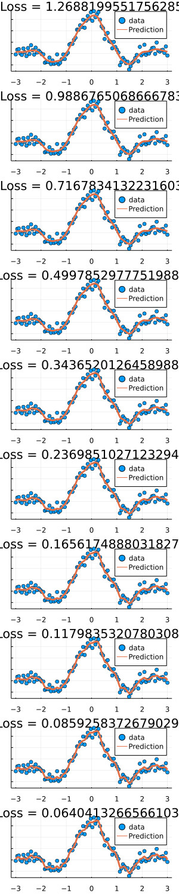

Kernel Ridge Regression
This example is under construction
Setup
using KernelFunctions
using MLDataUtils
using Zygote
using Flux
using Distributions, LinearAlgebra
using Plots
Flux.@functor SqExponentialKernel
Flux.@functor ScaleTransform
Flux.@functor KernelSum
Flux.@functor Matern32KernelGenerate date
xmin = -3;
xmax = 3;
x = range(xmin, xmax; length=100)
x_test = range(xmin, xmax; length=300)
x, y = noisy_function(sinc, x; noise=0.1)
X = reshape(x, :, 1)
X_test = reshape(x_test, :, 1)
nothing #hideSet up kernel and regularisation parameter
k = SqExponentialKernel() + Matern32Kernel() ∘ ScaleTransform(2.0)
λ = [-1.0]
nothing #hidefunction f(x, k, λ)
return kernelmatrix(k, x, X; obsdim=1) *
inv(kernelmatrix(k, X; obsdim=1) + exp(λ[1]) * I) *
y
end
f(X, k, 1.0)100-element Vector{Float64}:
0.041011792292112006
0.042764793944859304
0.044054901085782056
0.04488067499061399
0.045898067940871395
0.047347378746358186
0.04881640434415637
0.05041324283977393
0.051990138379446695
0.05241440418933915
0.050780991405151535
0.04591402503905987
0.03773020625855136
0.026346039365989067
0.011255435216432984
-0.007441061000963012
-0.02945147918432727
-0.05395611664032168
-0.0795974831572297
-0.10453185756048212
-0.12654254221049066
-0.14444385146471272
-0.15792284603609164
-0.16697277782616596
-0.17102375467847802
-0.16981998341598048
-0.16305848774150847
-0.15088615894806304
-0.13344455814594489
-0.10954024585672742
-0.07854758327204131
-0.04071394343249052
0.0036158925435747203
0.05450417297524963
0.11125382574490952
0.17253506727839069
0.23661839143016877
0.3024644597865747
0.3693987969091517
0.4363589683018392
0.5018758657113015
0.5641958197921421
0.6222564708687635
0.6754156473070965
0.7235028602553334
0.7663225498877172
0.8041016273232194
0.8358115493150805
0.8600540538938914
0.8758461307568484
0.8822107056829894
0.8787035285052902
0.8641755606593499
0.8381752005937788
0.8004059516662023
0.751548005459101
0.6941514684440874
0.6314762562529085
0.5664538777189768
0.501352772153246
0.4365117166078717
0.3719107122171834
0.3082302918172343
0.2459088888289037
0.1850223591836198
0.12499585147508382
0.06629042644727602
0.010301915487199522
-0.04079745231244573
-0.08464290558663179
-0.12076558593378425
-0.14965860123826102
-0.17124805015182812
-0.18493885142836533
-0.1900504786764935
-0.185896963033955
-0.17324031066905274
-0.153882095519652
-0.12993741377738097
-0.10358389235312013
-0.07655343962172446
-0.05012287276813403
-0.026126987273127466
-0.004926022618497457
0.013150855022671987
0.02791731435478574
0.04065843607005456
0.052246805186482476
0.06289186815185482
0.07207892223102425
0.0791194678198475
0.08380821966652216
0.08621802377767786
0.08587948922746949
0.08359976239251246
0.08021627225131754
0.07609321541834352
0.07149816309093729
0.06670745752225977
0.06178615495471447loss(k, λ) = (ŷ -> sum(y - ŷ) / length(y) + exp(λ[1]) * norm(ŷ))(f(X, k, λ))
loss(k, λ)1.460138757429401ps = Flux.params(k)
push!(ps, λ)
opt = Flux.Momentum(0.1)
nothing #hide
plots = []
for i in 1:10
grads = Zygote.gradient(() -> loss(k, λ), ps)
Flux.Optimise.update!(opt, ps, grads)
p = Plots.scatter(x, y; lab="data", title="Loss = $(loss(k,λ))")
Plots.plot!(x_test, f(X_test, k, λ); lab="Prediction", lw=3.0)
push!(plots, p)
endl = @layout grid(10, 1)
plot(plots...; layout=l, size=(300, 1500))
This page was generated using Literate.jl.